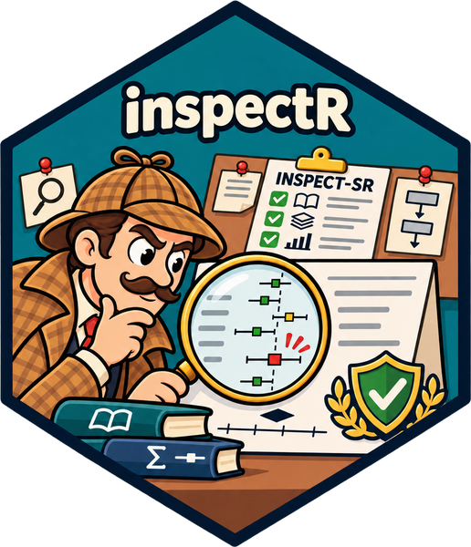
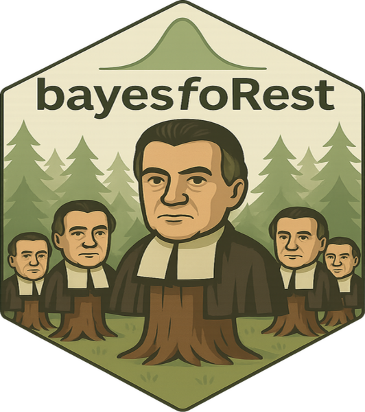

Tools, methods and resources for Bayesian meta-analysis.
What is Bayes-Metaverse?
Bayes-Metaverse brings together an R package suite, practical guidance and links to established software to support a transparent, reproducible workflow for Bayesian meta-analysis (Bayesian MA). The aim is to help researchers move from a clearly specified review question through data preparation, model fitting and checking, sensitivity analysis, and interpretation.
The project is organised around a workflow rather than a single model. Different reviews need different likelihoods, effect measures, priors and sensitivity analyses; the workflow makes those choices explicit and documents why they were made. See Getting Started for the full workflow.
Package suite
The packages are designed to work together while remaining useful as standalone tools.

bayesmaDatR · Shiny app for structured data extraction and entry, producing analysis-ready meta-analysis data


inspectR · Assess and document study trustworthiness using the INSPECT-SR framework


bayesma · Fit, check, compare and interpret Bayesian meta-analysis models using Stan


bayesfoRest · Forest plots and visualisations that bring posterior results and study-level information together

A package for Bayesian sequential meta-analysis (trial sequential analysis), informed by Spence, Steinsaltz & Fanshawe (2016), is also in development.
Installation
Install the whole suite with the bayesmetaverse meta-package:
install.packages("remotes")
remotes::install_github("bayes-metaverse/bayesmetaverse")Or install individual packages:
remotes::install_github("BLMoran/bayesmaDatR")
remotes::install_github("BLMoran/inspectR")
remotes::install_github("BLMoran/robbR")
remotes::install_github("BLMoran/bayesma")
remotes::install_github("BLMoran/bayesfoRest")bayesma uses Stan via cmdstanr. See the bayesma installation guide for setting up CmdStan.
Feedback, issues and contribution
- Bugs and feature requests: open an issue in the relevant package repository, or in bayesmetaverse if you’re not sure which package.
- Questions and ideas: use GitHub Discussions.
- Contributions: pull requests are welcome. Please read the contributing guide first.
- Code of conduct: this project follows a Contributor Code of Conduct. By participating, you agree to abide by its terms.
License
Bayes-Metaverse packages are released under the MIT License.
Acknowledgements
- The Stan Development Team for Stan, cmdstanr and the wider Stan ecosystem.
- The INSPECT-SR team, whose framework underpins inspectR.
- Spence, Steinsaltz & Fanshawe (2016) for the Bayesian sequential meta-analysis methods.
- The authors of brms, bayesmeta, MetaStan, RoBMA and scrutiny, whose work informs and complements this project.
- Inspired by tidyverse, easystats, fastverse and metaverse.